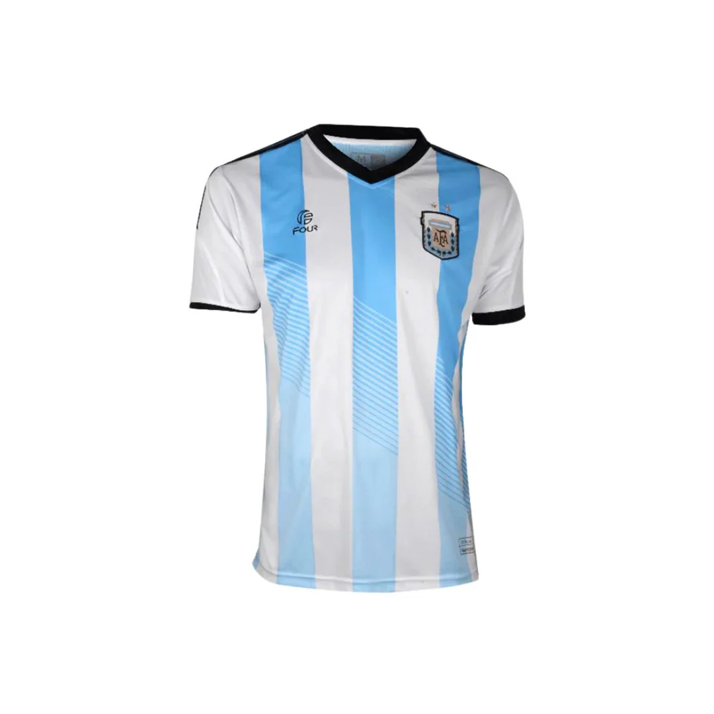
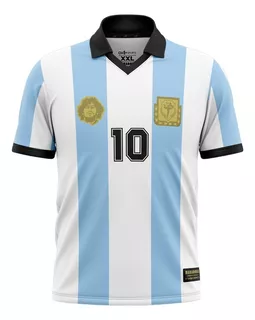
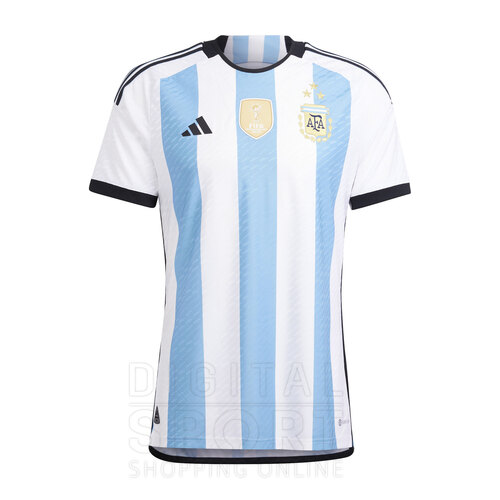

Años 50
Las camisetas eran simples, sin patrocinadores y con tela gruesa de algodón.

Años 70
Comienzan a verse los primeros diseños modernos y aparecen los sponsors.

Años 90
Colores llamativos, estampados atrevidos y materiales sintéticos dominan el mercado.

Actualidad
Las camisetas son ligeras, transpirables y con tecnología avanzada para el rendimiento.